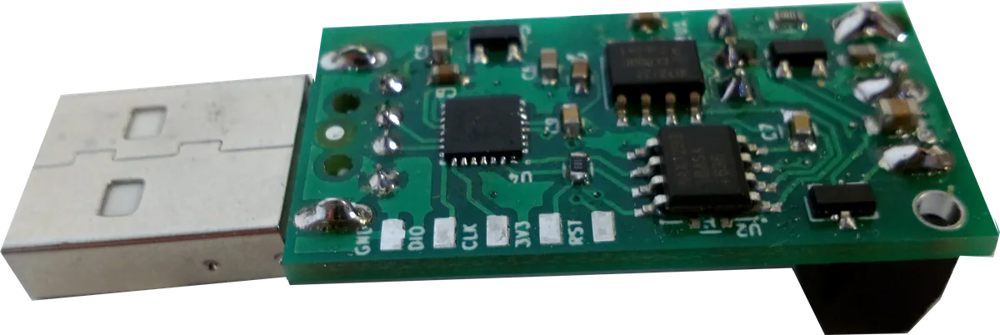
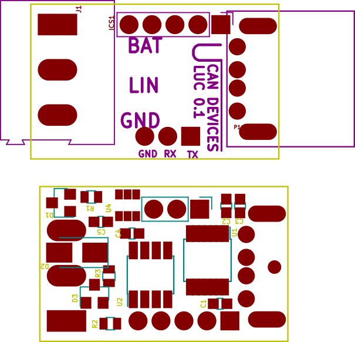
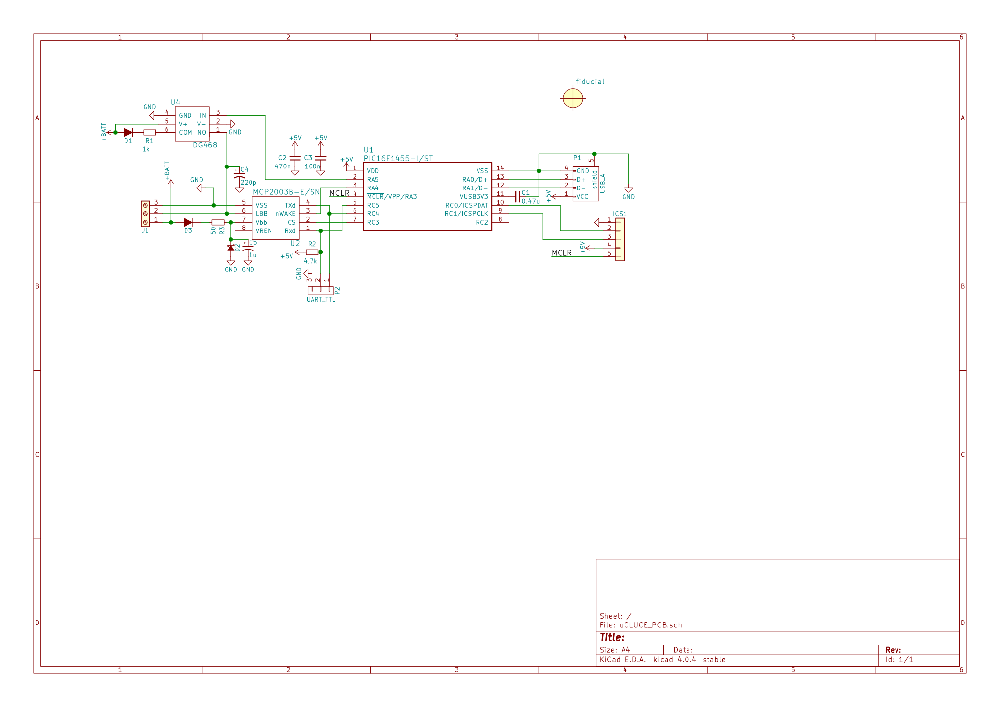
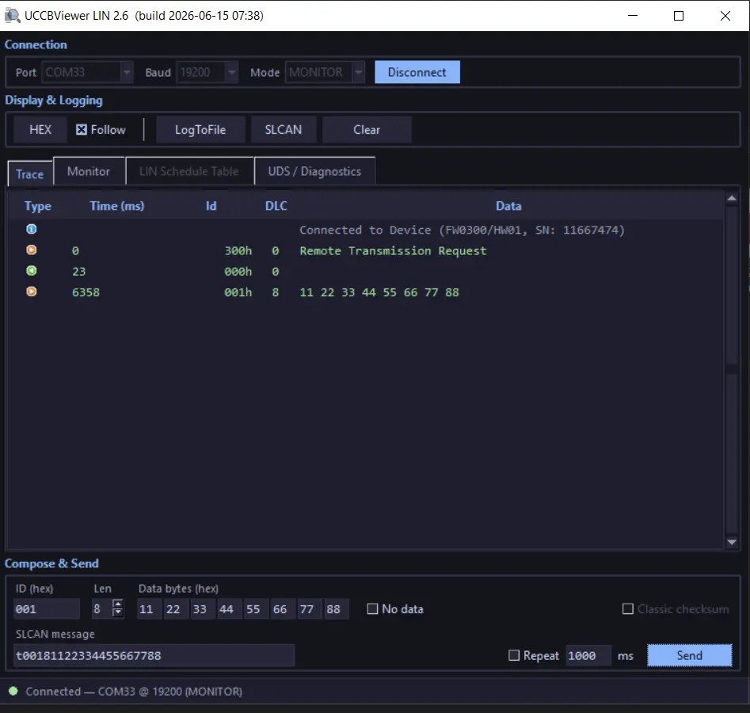

USB LIN Converter
Open source LIN 2.1 master, slave and bus monitor dongle. SLCAN compatible. Plug-and-play on Windows, Linux and macOS.
Buy with Card Buy on Tindie Buy on Lectronz Source on GitHub
Product and its documentation is supplied on an as-is basis and no warranty as to their suitability for any particular purpose is either made or implied. Producer will not accept any claim for damages howsoever arising as a result of use or failure of this product. This product is not intended for use in any medical appliance, device or system in which the failure of the product might reasonably be expected to result in personal injury.
Description
LIN(Local interconnect network) Usb Converter(LUC) can work both with PC without any additional drivers, it creates virtual COM port that handles LIN communication. Multiple features are supported like:
Introduction video
Details
Board bottom view

After USB enumeration device creates virtual COM port that is used both for data transfer and converter setup.
Device is be powered directly from USB, but external 4.5-28V is needed to supply LIN transceiver.
Board layout is shown below.

Drivers
For proper work on Windows you need to install virtual com drivers from ST site or download from here .
COM port Commands
Below is list of all available commands. USART baud rate is virtual so can be any. All commands are ASCI format. Commands are terminated with newline character CR (0xD). On error the device responses with 0x7 value.
| Command | Description |
| O | Opens device in master mode. |
| C | Close LIN port on device, frame will not be received. |
| Sx | Baud rate selection: S2 - 9600 S1,S3-S8 - 19200 |
| V | Get hardware version. |
| v | Get firmware version. |
| N | Get serial number. |
| L | Open device in, slave mode, for LIN slave simulation. |
| l | Open device in, monitor mode, message analyzer mode, with single frame sending possibility . |
| tiiildd | In Monitor mode, transmits full header and data frame. In Master mode, updates table set with new frame In Slave mode, updates table set with new data 0ii: Identifier in hexadecimal format (000-0FF) l: Data length (0-8) dd: Data byte value in hexadecimal format (00-FF) |
| r0iil | In Monitor mode, transmits header only with set ID and Length, subscribed slave should answer the header. In Master mode, puts or updates table set with this id for continuous sending. In Slave mode, updates table set with reception slot Proper timing is set according to LIN standard. 0ii: Identifier in hexadecimal format (000-0FF) l: Data length (0-8) |
| r1ff0 | In Master mode, starts sending frames from table. |
| r2ff0 | In Master, Slave mode, clears schedule table. |
| xm | Swich checksum for classic x2 for enhanced x1 |
Example workflow for Monitor Mode
000005: C (send close command)
000006: v (ask for firmware version)
000007: v0102 (get version number from device)
000008: V (ask for hardware version)
000009: V0101
000010: N
000011: N16000000
000012: W2D00
000013:
000014: S0 (speed setting, 19200)
000015:
000016: L (open in monitor mode)
000017:
000018: r0128 (transmit header with 8 data bytes request, id 0x12)
000019: z
000020: t01280011223344556677 (slave responded for header request with 8 byte data frame)
Example workflow for Master Mode
000015:
000016: O (open in master mode)
000017:
000018: r0018 (add to schedule table frame transmission header with 8 data bytes request, id 0x01)
000019: z
000018: r0022 (add to schedule table frame transmission header with 2 data bytes request, id 0x02)
000019: z
000020: t01280011223344556677 (add to schedule table frame transmission header + data (slave task) with 8 data bytes, id 0x12)
000021: z
000022: r1ff0 (start sending frames)
000023: z
Custom frame timing
You can tweek the timing in master mode just type upper letter T instead of t or R instead of r then format is similarT 0 id id t1 t1 t2 t2 len d0 d0 d1 d1 d2 d2where:
id - frame id same as standard
t1 - frame offset in ms
t2 - response wait time in ms
len - frame length
d0 .... - data
example frame with id 1 5 ms offset and 1 ms wait time after sending 3 bytes of data AA BB CC
T0005013AABBCC
FAQ
- What is the cheapest USB LIN bus converter that works on Linux?
- The uCanDevices USB LIN Converter (uLC) is an open-source LIN dongle around $27 that enumerates as a USB CDC virtual COM port on Linux, macOS and Windows. It speaks an SLCAN-style ASCII protocol so it bridges into SocketCAN via
slcandand works with parts of can-utils. No proprietary driver is required. - Does it support master and slave mode?
- Yes — monitor (full reception plus single-frame transmission), master (up to 15 scheduled slots) and slave (up to 15 slots for slave simulation). Modes are selected over the serial port with the
O,Landlcommands. - Is the LIN side optically isolated from the USB host?
- Yes. The LIN transceiver is optically isolated from the PC side, protecting the host from automotive transients. The LIN side needs an external 4.5–28 V supply since USB only powers the MCU.
- Which LIN baud rates and LIN version are supported?
- LIN 2.1, with selectable 9600 and 19200 baud. Classic and enhanced checksum are switchable with the
xmcommand. Custom frame timing is supported in master mode. - Is the firmware open source?
- Yes — firmware and hardware are open source at github.com/uCAN-LIN/LinUSBConverter. The device also has a USB DFU bootloader for in-field updates.
Hardware
We are using ST STM32f04264 microcontroller. Device PCB is designed in ki-cad. All source files are available in github here.

Software
Converter software is pure C code written in free TrueSTUDIO for STM32. All sources and releases with compilation instructions are available in our github here.
Uploading new software
ULC have got embedded DFU USB bootloader for usage see UsbCANConverter(UCCB) project see tutorial.
Tools
Python support
There is dedicated python library for LUC, (uCANLinTools) with: LDF parsing support, LIN frame (PIDs) encoding/decoding, LIN master, slave support. See uCANLinTools for more info, source code and examples see here
Serial port
You can use LUC on any operating system with serial terminal program like for example putty. Description of all available commands can be found in About section. All commands are the same as for USB-CAN converter so all tools can be reused, see UCAN USB-CAN converter project for libs and tools. LUC is also compatible with LINUX CAN-UTILS and SOCKET CAN. Device have its own terminal, uCCBViewer.
UCCBViewer is a GUI program for both uCAN CAN and LIN converters. For USB-LIN converter uCCBViewer functionalities are:
frame reception, transmission, master table setup, LIN schedule table and UDS / diagnostics. The viewer is now written in Python, so Java is no longer required. 
Newest release of UCCBViewer (p2.6)